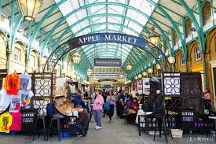
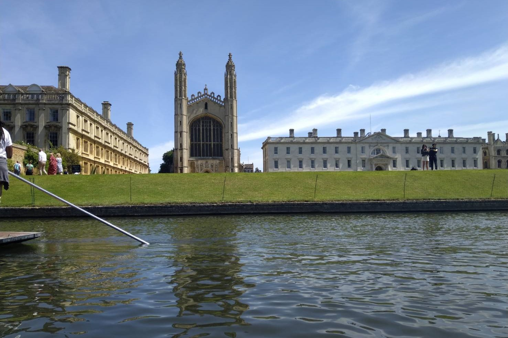
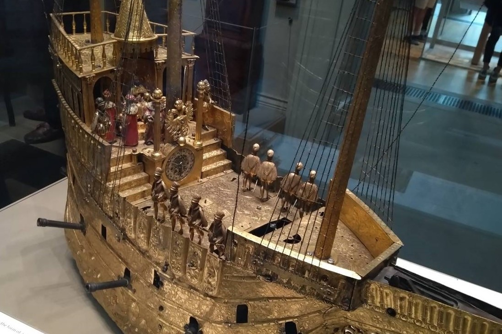

Entertainment

Shopping:
Shopping is an essential part in a travel. In the four cities I’ve been. London is the best place to go shopping. I had been to Oxford Street and Covent Garden. Both of them have a lot of stores to shop. You can find something cheaper in Taiwan. Also, these two places have some souvenir stores. If you want to buy gifts for your friends. You can choose there. There is one souvenir I ‘d like to recommend. That is the tea and hot cocoa and my favorite store is Whittard. Whittard has already opened in Taiwan, but you can get better price in the UK.
逛街是一段旅行不可缺少的一部份，倫敦是一個逛街好去處，我去了牛津街和柯芬園，兩個地方都有蠻多值得買的東西，你可能可以找到比台灣更便宜的價格，當然，也可以帶一些紀念品回去送朋友，我私心推薦一間店，Whittard，我很喜歡他們的茶還有可可粉，雖然他們已經有在台灣展店，但是英國的價格優惠很多。

Free tour:
The best experience there is the free tour. I attended three free tours in London, Oxford and Cambridge and all are worthwhile. The tourist guides took us to the attractions one by one and introduced the histories and stories to us. I knew more about those places because of the tourist guides. There will be the other tours which need some costs. But, it is possible to find tour for free. And, I am sure that their tour guides are great, too. Therefore, I think joining a free tour is a thing you must do in the UK.
在英國最棒的經驗就是免費導覽了，我倫敦、牛津、劍橋都有參加導覽，導覽員會介紹各個景點的歷史故事，十分有趣，而且不需要門票就可以聽導覽，他們的講解也都很有趣，我覺得到英國一定要參加這些導覽。

Museums & Attractions:
First, British Museum is an important place to go. There are plenty of exhibition there and it is impossible to visit completely in several hours. You can see a lot of interesting and ancient items. The best thing is that it is free for entry. If you want to know more you can pay for an audio guide. Second, you can go to Buckingham Palace to see the ceremonial change of guards. One thing you need to notice is that you should arrive earlier because there would be a lot of people waiting. If you are late, you will miss a place with good view. In addition to the above, some famous places like London Eyes, London Bridge and Big Ben is good to take a picture. But, these place are usually in a repair time. Whether you can see or not, it depends on your fortune.
景點: 第一個是大英博物館，我覺得是一個必須要去的地方，裡面有超級多的展覽，一兩個小時一定看不完，裡面有很多古老有趣的物品，而且不需要門票。第二，白金漢宮，可以去看衛兵交接，記得要提早去，因為人很多，否則，會錯時最佳視野位置。當然，知名景點倫敦眼、倫敦鐵橋、大笨鐘也很值得去拍張照，不過，這些景點很常整修，能不能看到全貌就要考驗運氣了。